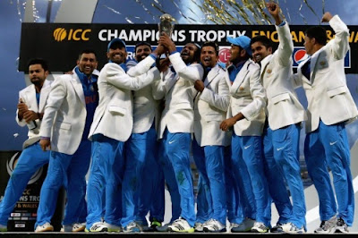
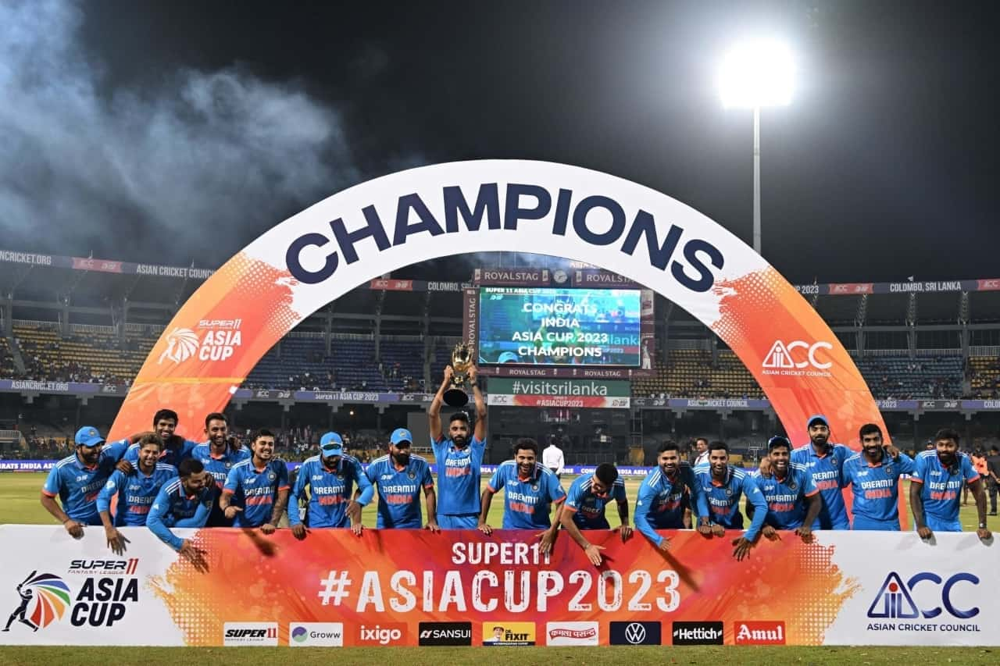

Introduction:
Cricket is a bat-and-ball game played between two teams of eleven players on a field at the centre of which is a 22-yard (20-metre) pitch with a wicket at each end, each comprising two bails balanced on three stumps. Two players from the batting team (the striker and nonstriker) stand in front of either wicket, with one player from the fielding team (the bowler) bowling the ball towards the striker's wicket from the opposite end of the pitch.
List of Formats: In cricket, there are three formats based on the overs played.
- 1.T20 Format - 20 overs
- 2.ODI Format - 50 overs
- 3.Test Fromat - 5 days
Popular Tournaments played:
- World cup
- Indian Premier League
- Test championship
Rules in cricket:
- Each team is made up of 11 players.
- The bowler must bowl 6 legal deliveries to constitute an over.
- A game must have two umpires stood at either end of the wicket.
- One team bats first while the other team carries out the fielding tactics.
- An over occurs when a bowler bowls 6 legal deliveries (overarm technique) from one wicket end.
- Fielding teams must have one designated wicket keeper.
Iconic moment images:

